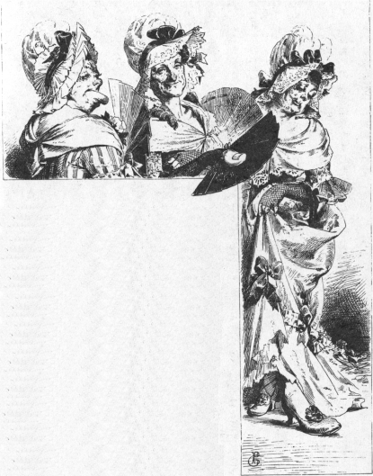

三人の糸くり女
グリム Grimm
矢崎源九郎訳
むかし、あるところに、ひとりの女の子がおりました。この子はなまけもので、糸をつむぐのが大きらいでした。おかあさんがいくらいっても、どうしてもいうことをききませんでした。とうとう、おかあさんはがまんがしきれなくなって、あるとき、腹だちまぎれに女の子をぶちました。すると、女の子はわあ、わあ声をあげて、泣きだしました。
ちょうどそこへ、お妃さまが馬車にのってとおりかかりました。お妃さまは、泣き声をききつけて、馬車をとめさせました。それから、うちのなかへはいっていって、おかあさんに、
「往来まで泣き声がきこえますが、どうしてそんなにぶつのですか。」
と、たずねました。
するとおかあさんは、じぶんのむすめがなまけてばかりいることをひとに知られるのをはずかしく思ったものですから、こういいました。
「この子に糸くりをやめさせることができないものでございますから。この子は年がら年じゅう、糸くりをしたがっておりますが、わたくしどもは貧乏で、アサを手にいれることができないのでございます。」
それをきいて、お妃さまがこたえました。
「あたしは糸くりの音をきくのが大すきです。あの、糸車のブンブンいう音をきくぐらい、たのしいことはありません。おまえのむすめを、いますぐお城へよこしなさい。あたしのところには、アサがたくさんありますから、すきなだけ糸くりをさせてやりましょう。」
おかあさんは心のそこからよろこびました。こうして、お妃さまは女の子をいっしょにつれていきました。
お城へつきますと、お妃さまは女の子を上の三つのへやにつれていきました。見れば、どのへやにもそれはそれはみごとなアサが、床から天井までぎっしりつまっています。
「さあ、このアサをつむいでおくれ。」
と、お妃さまがいいました。
「これをのこらずつむいでしまったら、あたしのいちばん上のむすこのおよめさんにしてあげますよ。おまえは貧乏ですけど、そんなことはかまいません。いっしょうけんめいせいだしてはたらくことが、なによりの嫁入りじたくですからね。」
女の子は、びっくりしてしまいました。だって、こんなにたくさんのアサでは、三百ぐらいのおばあさんになるまで、まい日朝から晩までひっきりなしにつむいだって、とてもつむぎきれはしませんもの。女の子はひとりになりますと、しくしく泣きだしました。そうして、三日のあいだ、手もうごかさずに泣きつづけていました。
三日めに、お妃さまがやってきました。お妃さまは、まだなんにもつむいでないのを見ますと、ふしぎに思いました。けれども女の子は、
「おかあさんのうちを遠くはなれてまいりましたものですから、それがとてもかなしくって、まだしごとにとりかかれなかったのでございます。」
と、いいわけをしました。
お妃さまは、それもむりもないと思いましたが、へやをでていくときにこういいました。
「あしたは、しごとをはじめてくれなければいけませんよ。」
女の子はまたひとりになりますと、どうしていいのかわからなくなって、かなしみながら窓ぎわにあゆみよりました。すると、むこうから三人の女がやってくるのが見えました。そのうちのひとりは、ひらべったい、ひろい足のうらをしていました。もうひとりは、大きな下くちびるがあごまでぶらさがっていました。三人めの女は、はばのひろい親指をしていました。
三人の女は窓のまえに立ちどまって、上を見あげて、
「どうかしたの。」
と、女の子にたずねました。
女の子は、じぶんのこまっているわけを話しました。それをききますと、三人の女たちはたすけてあげようといって、
「おまえさんがわたしたちを婚礼の席によんでくれてね、わたしたちのことをはずかしがらずにおばさんたちだといって、おまえさんの食卓につかせてくれるなら、そのアサをかたっぱしからつむいであげよう。それも、いくらもたたないうちにやってしまうよ。」
「ええ、そうするわよ。」
と、女の子はこたえました。
「さあさあ、はいってきて、すぐにしごとをはじめてちょうだい。」
そこで、女の子は、この三人のきみょうな女たちをなかにいれて、さいしょのへやにすこしばかり場所をつくってやりました。すると、女たちはそこにこしをおろして、さっそく糸をつむぎにかかりました。ひとりが糸をひきだして、車をふみました。するともうひとりが、その糸をしめらして、三人めの女がそれをぐるぐるまわして、指でうけ盤をたたきました。そして、この女がたたくたびに、いくらかのより糸が下へおちました。しかもそのより糸は、まことにみごとにつむいであるのでした。
女の子は、この三人の糸くり女をかくしておいて、お妃さまのくるたびに、つむぎあがったより糸をたくさん見せました。ですから、お妃さまは、口をきわめて女の子をほめました。
さいしょのへやがからになりますと、こんどは、二ばんめのへやにうつりました。こうして、とうとう三ばんめのへやになりましたが、これもたちまちのうちにかたづいてしまいました。そこで、三人の女は女の子におわかれをして、
「わたしたちに約束したことをわすれるんじゃないよ。おまえさんのしあわせになることだからね。」
と、いいました。

女の子がお妃さまにからっぽになったへやと、より糸の大きな山を見せますと、お妃さまは婚礼のしたくをしました。花むこも、こんな器用なはたらきもののおよめさんをもらうのをよろこんで、女の子のことをそれはそれはほめました。
「じつは、あたくしにはおばが三人ございます。」
と、女の子がいいました。
「いままであたくしをたいへんしんせつにしてくれておりましたので、こういうしあわせな身になりましても、おばたちのことをわすれたくはございません。つきましては、おばたちを婚礼の席によんで、いっしょの食卓につかせてやりたいと思いますが、おゆるしねがえませんでしょうか。」
「ゆるしてあげますとも。」
と、お妃さまと花むこがいいました。
さて、いよいよおいわいがはじまりました。そのとき、みょうななりをした三人の女がはいってきました。すると、花よめは、
「おばさまがた、よくおいでくださいました。」
と、いいました。
「いやはや、どうも。」
と、花むこがいいました。
「おまえはまた、ずいぶんみっともないれんちゅうと知りあいなんだねえ。」
それから、花むこはひらべったい足をしている女のところへいって、たずねました。
「あなたは、どうしてそんなひらべったい足をしているのですか？」
「ふむからだよ、ふむからだよ。」
と、その女はこたえました。
そのつぎに、花むこはもうひとりの女のところへいってききました。
「あなたは、どうしてそんなにたれさがったくちびるをしているのですか？」
「なめるからだよ、なめるからだよ。」
と、その女はへんじをしました。
さいごに、花むこは三人めの女にたずねました。
「あなたは、どうしてそんなにはばのひろい親指をしているのですか？」
「糸をまわすからだよ、糸をまわすからだよ。」
と、その女はこたえました。
それをきくと、王子はびっくりして、
「それなら、わたしの美しい花よめには、もうこれからは、けっしてつむぎ車に手をふれさせないことにする。」
と、いいました。
おかげで、花よめはあのいやな糸くりをしないでもいいことになりました。
底本：「グリム童話集（1）」偕成社文庫、偕成社
1980（昭和55）年6月1刷
2009（平成21）年6月49刷
入力：sogo
校正：チエコ
2020年5月27日作成
2023年9月6日修正
青空文庫作成ファイル：
このファイルは、インターネットの図書館、青空文庫（https://www.aozora.gr.jp/）で作られました。入力、校正、制作にあたったのは、ボランティアの皆さんです。
●表記について
- このファイルは W3C 勧告 XHTML1.1 にそった形式で作成されています。